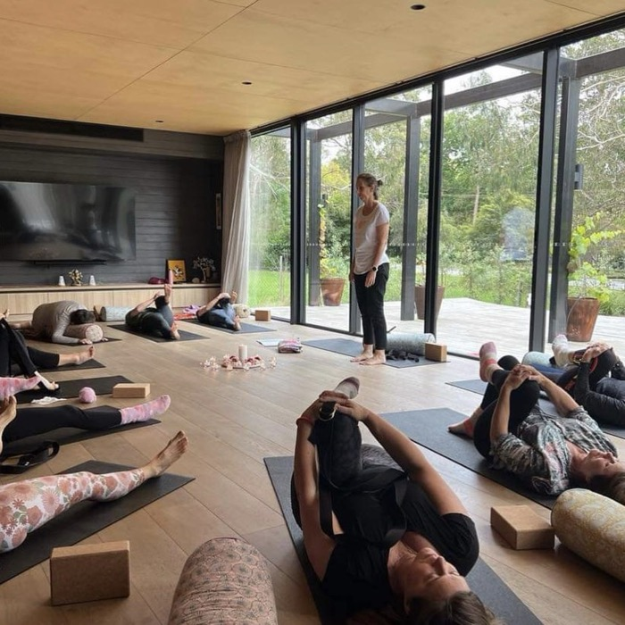

Think about the last time your team really switched off together. Not a quick lunch between meetings or a few drinks on a Friday, but a full day away from screens, inboxes and the usual roles everyone plays at work.
For most teams, it's been a while. And that's exactly why getting offsite can be so powerful.

Why getting offsite works
In the office, everyone slips straight back into their usual patterns: the same seats, the same conversations, the same pressure. Step into a new environment and something shifts. People slow down, notice more and connect differently.
A wellbeing day retreat gently takes teams and managers out of their comfort zone. Holding a long breath, sitting in silence for the first time, or stepping into a cold plunge alongside a colleague creates a shared experience that's hard to recreate in a meeting room. Titles fall away. People see each other as people.
And those moments travel back to the office: more trust, easier conversations and a team that understands what each other needs to do their best work.
Source: Safe Work Australia, Key Work Health and Safety Statistics Australia 2025
What a day retreat can include
Every retreat is designed around your team, but a day might weave together:
- Yoga and mindful movement to release tension held from long hours at a desk
- Breathwork as a simple, practical tool for calming the nervous system under pressure
- Sound healing for deep rest, where many people find they can finally switch off
- Sauna and cold plunge to build resilience, step out of the comfort zone together and leave feeling energised
- Meditation and reflection to create space for clarity, gratitude and better decisions
- Nourishing food and time in nature to reset the body as well as the mind
Source: Buijze et al., PLOS ONE, 2016
Three ways to get away
- Urban retreat. A full day in a calm, beautiful Melbourne space. No long travel, easy to schedule, and a complete change of pace without leaving the city.
- Coastal day retreat. Head to the Mornington Peninsula for sea air, open space and a slower rhythm. The drive alone helps people leave work behind.
- Overnight retreat. For teams who want to go deeper. An evening practice, a proper night's rest and a fresh morning together create real connection.
Source: White et al., Scientific Reports, 2019
Christmas parties, coffee pods… and your team's mind?
Most businesses happily spend money on the end-of-year party, the good coffee machine, team lunches and snacks in the kitchen. They're lovely, and they show people they're valued. But it's worth asking: how much of that budget goes towards the thing that drives everything else, your team's mental health?
A small part of what's already spent on drinks and coffee pods could give your people tools they'll use for years: how to calm their nervous system before a big meeting, switch off after a long week, sleep better and look out for each other.
More than a phone number
Many workplaces offer an Employee Assistance Program (EAP), and it's an important safety net. Confidential, professional support when someone needs it most matters.
But on its own, "here's a number to call" isn't a wellbeing program. An EAP is there for when things have already become hard. It relies on people recognising they're struggling, feeling comfortable reaching out and taking that step on their own, which many people find difficult.
A genuine wellbeing program works before things reach that point. It:
- Builds connection, so people notice when a colleague isn't themselves
- Normalises the conversation about stress, burnout and mental health
- Gives practical tools people can use every day, not just in a crisis
- Brings leaders in, showing from the top that wellbeing really matters
- Creates shared experiences that build trust and a stronger team culture
Team building doesn't have to mean trivia nights and escape rooms. Breathing, moving and resting together, stepping out of the comfort zone side by side, can do more for team connection than another round of drinks. Think of the EAP as the safety net, and a wellbeing program as the foundation that keeps people from needing it.
Add it to your conference or event
Already planning a conference, leadership day or offsite? A wellbeing session can open the day with energy, reset the room after lunch or close things on a meaningful note. With more than 20 years in corporate events, I understand how to fit wellbeing into a run sheet so it adds to the program rather than competing with it.
Programs designed around your needs
No two teams are the same, so every program is built around what yours is actually dealing with. Topics can include:
- Psychosocial safety and understanding the new expectations on Victorian workplaces
- Burnout: recognising the signs early and what to do about them
- Authentic leadership and leading with calm under pressure
- Community and connection: building a team that genuinely supports each other
- Sleep and why rest is a performance tool, not a luxury
- Boundaries that protect energy and prevent overload
- Meditation and resilience: practical tools for everyday stress
- Gratitude and the small habits that shift a team's mood
- Nutrition and the link between what we eat and how we feel
- Pilates and strength for bodies that spend too long sitting
In Victoria there's an extra reason to invest in this. Employers must now actively manage psychosocial risks like high job demands, and wellbeing programs can play a meaningful supporting role. I wrote more about that in Psychological health is now the law in Victoria.
Source: PwC and Beyond Blue, Creating a mentally healthy workplace: Return on investment analysis, 2014
Ready to take your team offsite?
Whether it's a half-day reset, a full day on the coast or an overnight escape, I'd love to help you design an experience your team will remember long after they're back at their desks.
Step away. Breathe. Come back stronger, together.
Sauna and cold plunge are optional and always offered with guidance. Anyone with a health condition, or who is pregnant, should check with their doctor first.